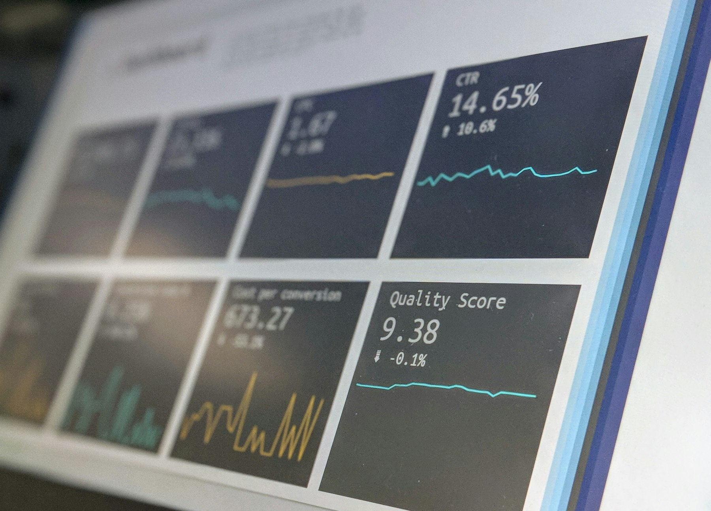

30 PMI italiane a confronto con il miglior quartile del loro settore
La stessa domanda che ci poniamo per una PMI cliente — su quali voci di bilancio può migliorare, e quanto — qui la testiamo su 30 PMI italiane reali (dati AIDA/Bureau van Dijk), confrontando ogni azienda con il miglior quartile del proprio settore negli ultimi 5 anni. Nessun nome d’azienda è pubblicato: solo etichette anonime.
30 PMI italiane reali (bilanci AIDA/Bureau van Dijk, ultimi 5 anni) su 6 settori, confrontate con il miglior quartile del proprio settore. Anonimizzate: mai il nome dell’azienda, solo “Azienda N”.
Cosa misura questo benchmark
30 PMI italiane reali, 6 settori, storico di bilancio completo sugli ultimi 5 anni. Per ogni azienda e ogni anno confrontiamo il risultato reale con l’“obiettivo”: il valore del miglior quartile (75°/25° percentile) tra le aziende comparabili dello stesso settore e dello stesso anno relativo — nessun dato futuro, nessun look-ahead.
Composizione per settore
Dal perimetro alle PMI mostrate
Reale vs obiettivo di settore, anno per anno
Il divario tra risultato reale e obiettivo di settore è persistente nel tempo, non un caso isolato di un singolo anno. Qui sotto la media di tutte le PMI analizzate; più in basso puoi esplorare azienda per azienda o settore per settore con il selettore in cima alla pagina.
EBITDA/Vendite: reale vs obiettivo
ROE: reale vs obiettivo
Le tre metriche di bilancio, azienda per azienda
Media di tutte le PMI analizzate — usa il selettore in cima alla pagina per vedere una singola azienda o la media di un settore.
EBITDA/Vendite
ROE
Rotazione capitale investito
Quanto vale, in euro, colmare il divario
Le stesse due metriche tradotte in euro: quanto costerebbe operare come il miglior quartile del settore (costi operativi), e quanto capitale investito netto servirebbe per generare lo stesso fatturato con la stessa efficienza. Valori per l'azienda o il settore selezionato in cima alla pagina, o per la media di tutte le PMI.
Costi operativi: reale vs ipotetico
Capitale investito netto: reale vs ipotetico
Divario teorico sui costi
Rotazione del capitale investito: reale vs obiettivo
Avvertenza. Il confronto con il miglior quartile di settore ha finalità illustrative: non è una previsione dei risultati futuri né una garanzia di miglioramento per la singola azienda.
Vuoi lo stesso rigore sui dati della tua azienda?
Una call conoscitiva di 30 minuti, senza impegno, per capire da dove partire.
Parla con Veyron